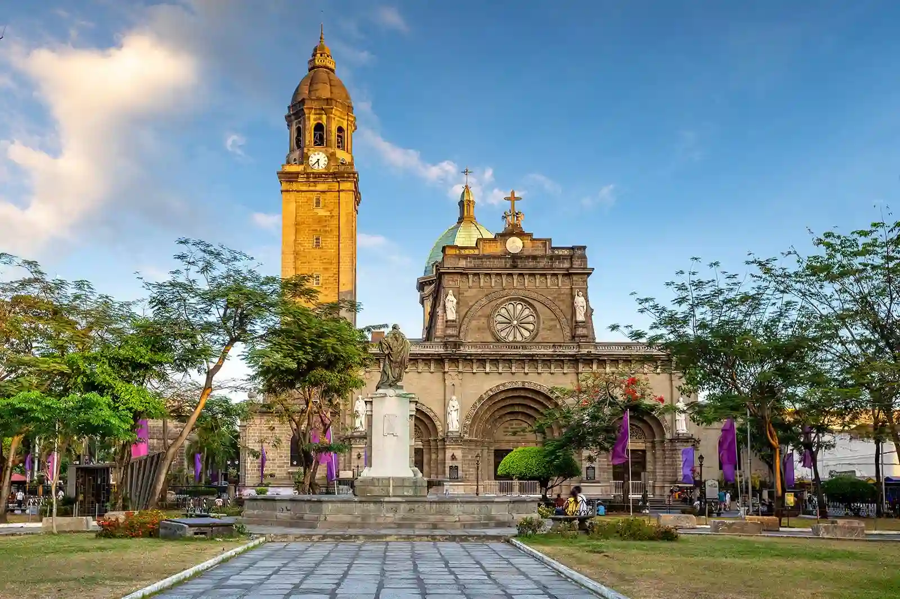
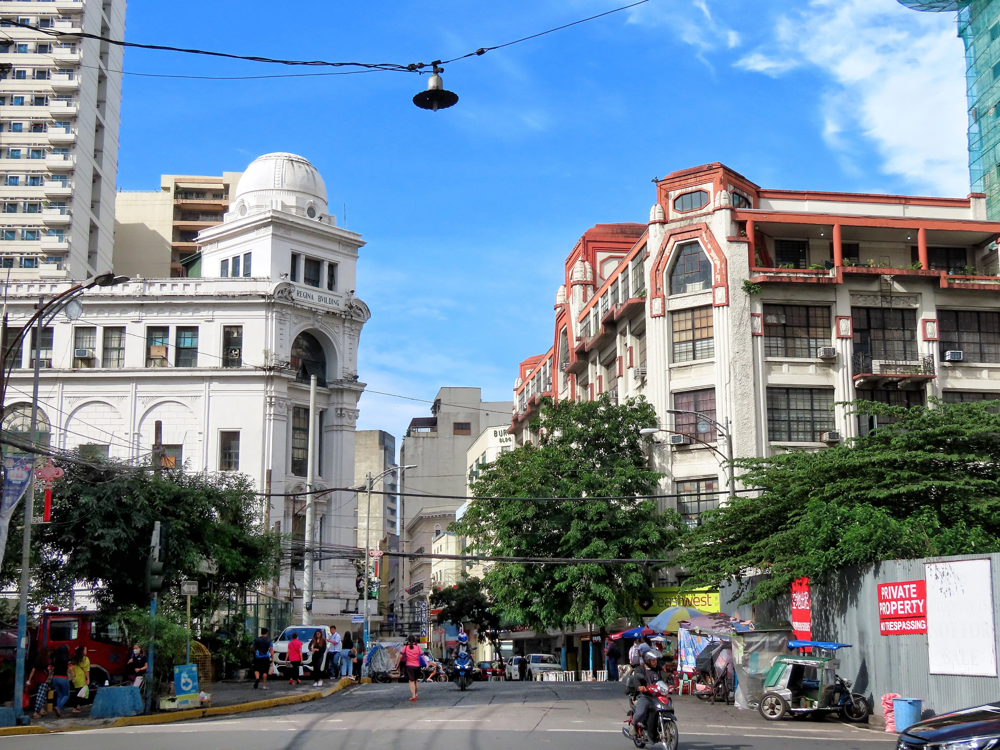

Intramuros
Walk through the walled district and explore its historic streets and stone gates.
Manila Chamber of Commerce
Explore Manila through its historic streets, public spaces, and local businesses.

Walk through the walled district and explore its historic streets and stone gates.
Visit the Rizal Monument and take a walk through the park’s open grounds.

Explore a historic commercial street and look up to see the architecture above its storefronts.
Find music lessons, printing services, and cafés in the chamber directory.
Browse the member directory